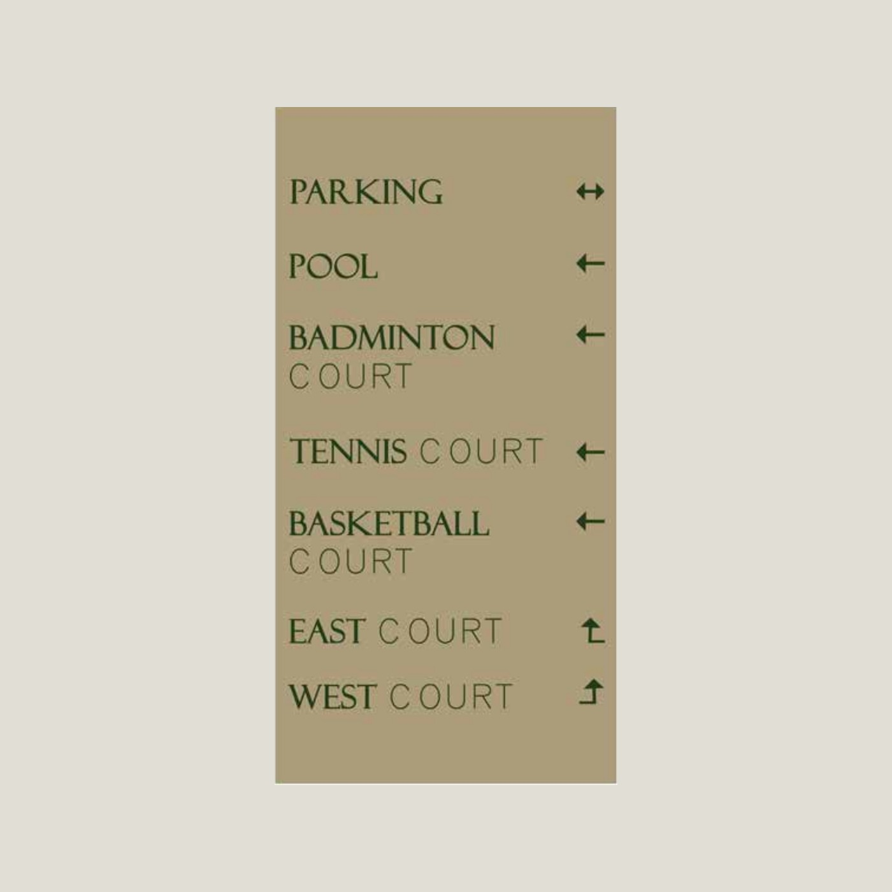
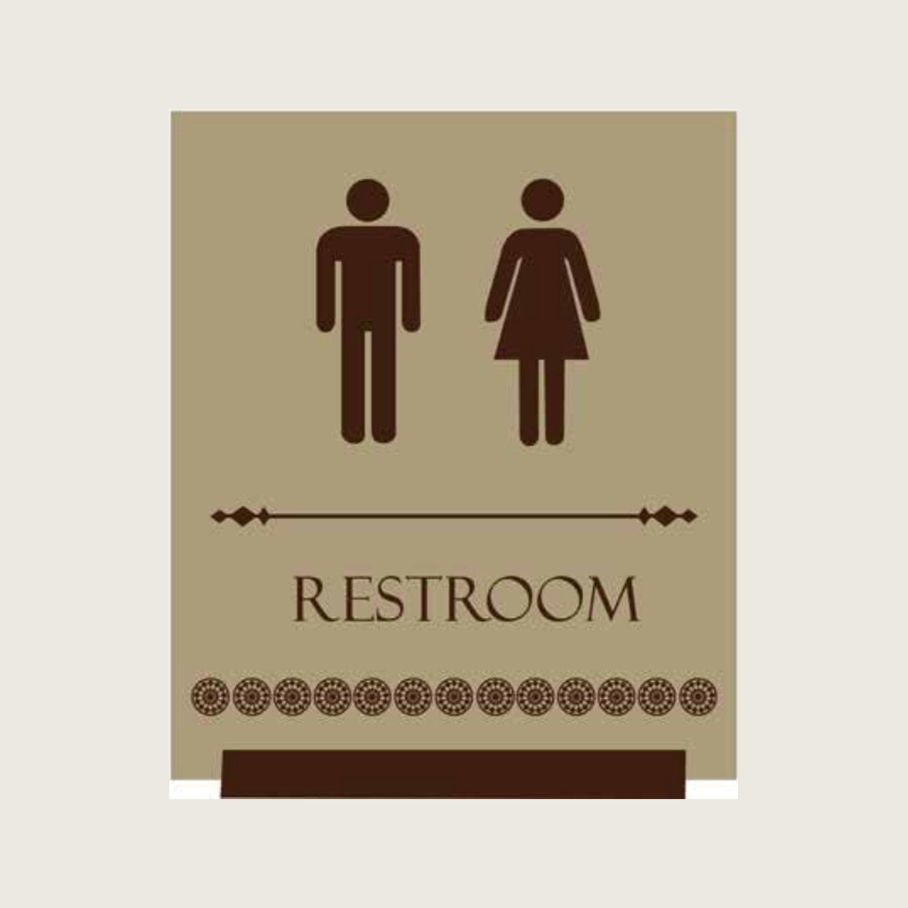

05Related Work
A wayfinding system for the members' club at DLF Mullanpur. The whole language is deliberately quiet — a warm kraft tone, a fine serif, custom pictograms drawn to match the type, and a heritage room-naming scheme — so a club never feels like an airport. One "M" ties it together.
Most wayfinding shouts. The brief for The City Club was the opposite: signage that does its job without raising its voice. So the palette is a single warm kraft tone, the type is a fine serif with generous spacing, and arrows are slim and quiet.
It runs from the big directional boards down to the smallest restroom plate as one calm, consistent family — the kind of signage a member stops noticing, which is exactly the point.


Drawn, not borrowed.
Stock pictograms always look imported. So the restroom, change-room and amenity symbols were drawn from scratch to share the weight and warmth of the serif lettering, finished with a small run of dots that reads as a quiet decorative base. The signs feel made for this club rather than ordered from a catalogue.
Rooms carry names, not numbers. Spaces like the Viceroy, the Duke and the Cavalry Room give the club a sense of story and make directions easier to remember — "the Cavalry Room" sticks where "Hall 3" never would. The wayfinding simply carries that naming through, consistently, to every door.